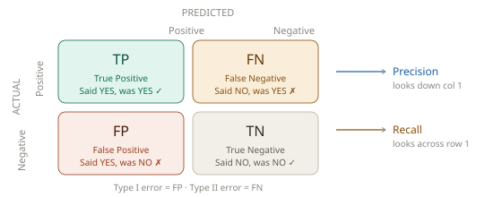
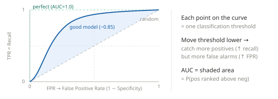
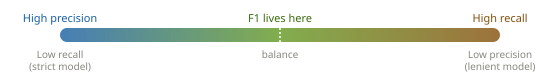

Basic Evaluation Metrics
# Classification Metrics
- Everything flows from the confusion matrix
- The four metrics
- ROC curve — visual intuition
- The precision–recall trade-off
- When to use which metric
- Memory anchors
- The doctor analogy (covers all four)
- Formula quick-reference
# Everything flows from the confusion matrix

# The four metrics
# 🔵 Precision
“Of all I said YES, how many were actually YES?”
“When I raise the alarm, am I usually right?”
Precision = TP / (TP + FP)
- Looks down the predicted-positive column
- Low precision = cry-wolf problem — too many false alarms
- Penalizes FP
- 🔍 Spam filter: If a real email lands in spam, users are furious. Maximize precision → only flag when very sure.
# 🟠 Recall (Sensitivity / TPR)
“Of all the real YESes, how many did I catch?”
“Am I missing sick people?”
Recall = TP / (TP + FN)
- Looks across the actual-positive row
- Low recall = missed cases problem — dangerous misses
- Penalizes FN
- 🏥 Cancer screening: Missing a real case is catastrophic. Maximize recall → catch every possible case, even with false alarms.
# 🟢 F1 Score
“The balance between precision & recall”
“Harmonic mean — punishes extremes”
F1 = 2 × Precision × Recall / (Precision + Recall)
- Use when you want both to matter equally
- A model with Precision=1, Recall=0 gets F1=0, not 0.5
- ⚖️ Why harmonic? Arithmetic mean of 100% + 0% = 50% — seems OK but is terrible. Harmonic mean = 0%. Extremes are punished.
# ROC-AUC
“How well does the model rank positives above negatives — at every possible threshold?”
AUC = P(score(positive) > score(negative))
- Threshold-independent — evaluates the model’s discriminative ability overall
- AUC = 1.0 → perfect · AUC = 0.5 → random coin flip
- Unaffected by class imbalance
- ROC plots TPR (recall) vs FPR at every decision threshold. AUC is the area under that curve.
# ROC curve — visual intuition

# The precision–recall trade-off

Key rule: Lowering a classifier’s decision threshold → flags more things as positive → recall goes up, precision goes down. You can’t generally have both high. Pick based on what failure is worse: a missed case (optimize recall) or a false alarm (optimize precision).
# When to use which metric
| Metric | Use when… | Classic example |
|---|---|---|
| Precision | False alarms are costly | Spam filter, legal doc retrieval |
| Recall | Missing a case is costly | Cancer screening, fraud detection |
| F1 | Classes are imbalanced & both matter | NLP tagging, information retrieval |
| ROC-AUC | Threshold-independent comparison | Comparing models overall |
# Memory anchors
# Precision vs Recall in one sentence
- Precision = “Is my YES trustworthy?” → a precise marksman hits exactly what they aim at
- Recall = “Did I find all the YESes?” → a wide net catches every fish (and some seaweed)
# ROC-AUC in one sentence
Pick any threshold → plot (FPR, TPR) → move the threshold → trace a curve → AUC = area under it = probability that the model ranks a random positive above a random negative.
0.5 = random guessing · 1.0 = perfect
# The doctor analogy (covers all four)
A radiologist reads 100 scans — 10 are cancerous. She flags 12 as positive: 8 true cancers + 4 false alarms.
| Metric | Calculation | Result | Meaning |
|---|---|---|---|
| Precision | 8 / 12 | 67% | Of her flags, 67% were real cancers |
| Recall | 8 / 10 | 80% | She caught 80% of actual cancers |
| F1 | 2×0.67×0.8 / (0.67+0.8) | 73% | Balanced score |
| ROC-AUC | — | ~0.85 | Her confidence scores rank real cancers above healthy scans 85% of the time |
# Formula quick-reference
Precision = TP / (TP + FP) ← denominator: all predicted positives
Recall = TP / (TP + FN) ← denominator: all actual positives
F1 = 2 × P × R / (P + R) ← harmonic mean of P and R
Accuracy = (TP + TN) / (all) ← don't use when classes are imbalanced
ROC-AUC = P(score(pos) > score(neg))
Why NOT accuracy on imbalanced data? If 99% of samples are negative, a model that always predicts “NO” gets 99% accuracy but 0% recall. It’s useless.